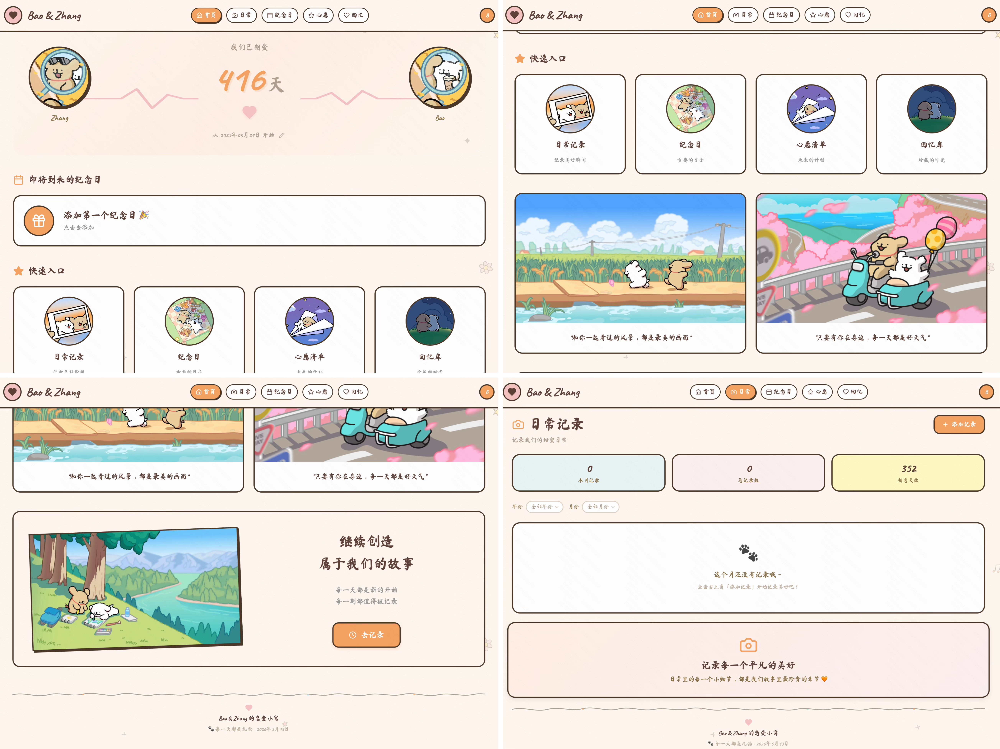

IDENTITY
AI EXPLORER OS
SYSTEM ONLINE
PROFILE SIGNAL
2002/ZJU/INTJ
FOCUS AREA
- 场景理解
- 用户洞察
- 数据敏感
- 真实价值
- 长期迭代
CURRENT MODE
PM CANDIDATE
Turning ideas into product demosCORE BELIEF
保持好奇心与热情。
LIVE SIGNAL
AI MODE ON
SELECTED MODES
把AI想法变成可运行的产品。
01
网站
恋爱记录网站
一个轻量、简约、温馨的恋爱记录网站。
AI全流程
生活痛点
02
agent
基于飞书的企业知识整合与分发agent
支持从飞书文档、群聊、会议纪要等多源信息中自动识别并沉淀待办事项。
更多idea待更新
PROJECT DETAIL
恋爱记录网站
全程使用 AI 工具独立完成从需求、开发到上线的全流程产品实践。
项目背景
市面上的主流恋爱记录App（如恋爱记）不断做加法，存在功能冗余与广告泛滥的问题，导致核心“记录与回顾”体验被稀释。于是我做了这个只属于我们的网站——轻量、纯粹，只专注三件事：
- 好好记下每一个平凡而又珍贵的日常
- 清晰看见一起走过的日子
- 温柔提醒每一个值得纪念的瞬间
通过极简设计和轻量化实现，回归「记录与回忆」的本质。未来我会持续优化它，希望有一天它也能为少数同频的人提供一个安静的小角落。
流程
01想法梳理豆包、ChatGPT、Gemini
02UI设计Figma Make、飞书妙搭
03开发实现飞书妙搭、Cursor、Claude Code、Trae、Antigravity
04数据存储Supabase
05上线部署Netlify
作品预览


READY TO QUEUE